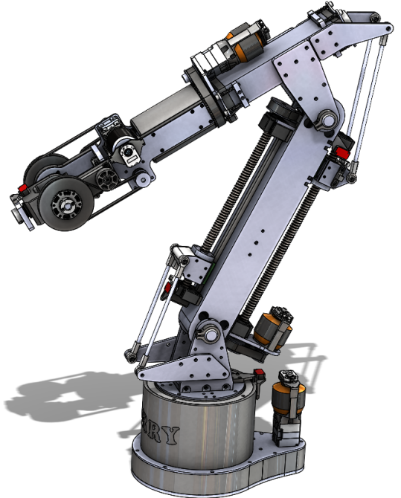
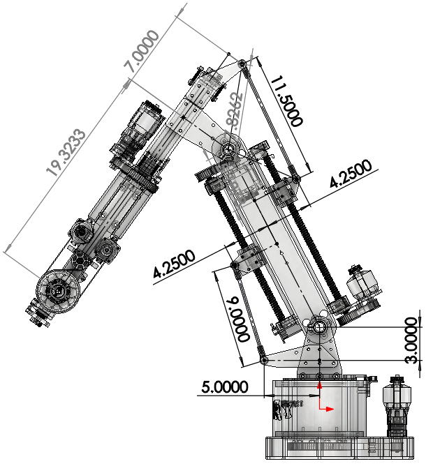
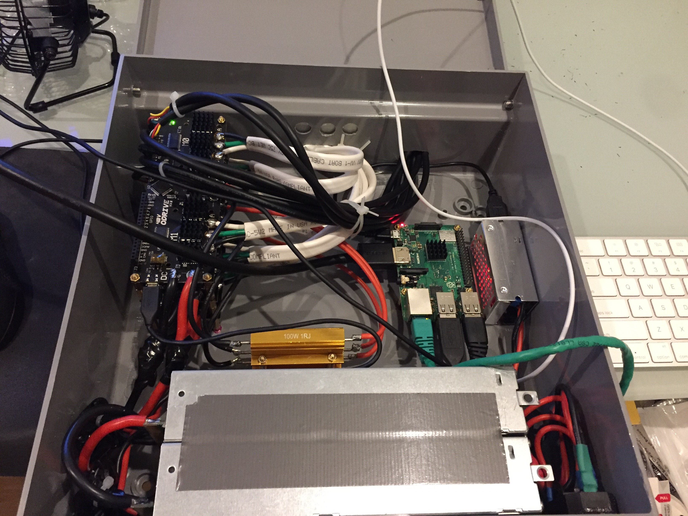

Terry, My 6DOF Spherical Robot Arm
Here is a project I worked on during the summer of 2020.
Terry is a 6 dof spherical robot arm that is capable of visiting any position and orientation in space within the arm's reach. When completely vertical, Terry is just over 50" tall. Terry is made from readily available materials like sheet metal, box tubing, 3d printer filament, and over the counter components. All the machining was done either by hand or with the CNC router I made a while back in high school. The project is ongoing, with efforts to write an inverse kinematic solver from scratch.
The project files can be found at: https://github.com/evagorac/terry


Hardware
Electronics
Terry uses two series server supplies at 12V 60A each. Terry uses 24V Odrives for all axes. A single raspberry pi communicates to the motor controllers over USB and receives commands over a network.

Joints
Something unique about my design might be the ball screws that drive j2 and j3 with push rods instead of connecting the output of a motor shaft to the axis of rotation. I did this to remove as much backlash in j2 and j3 without the need for super expensive harmonic / cycloidal gearboxes that are standard in most industrial robot arms.

I also used a differential in the wrist of the robot to allow J6 to rotate indefinitely.